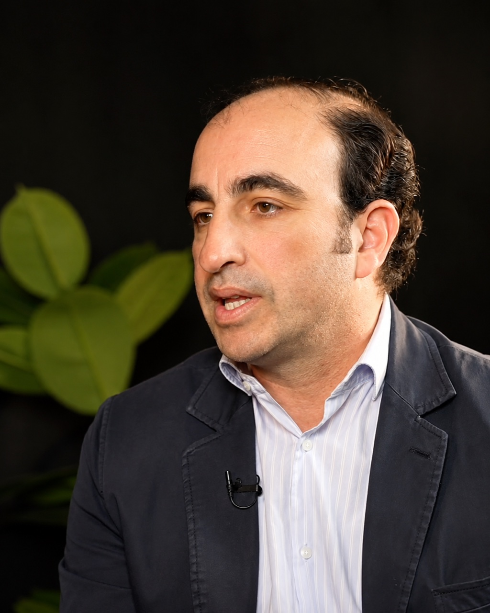
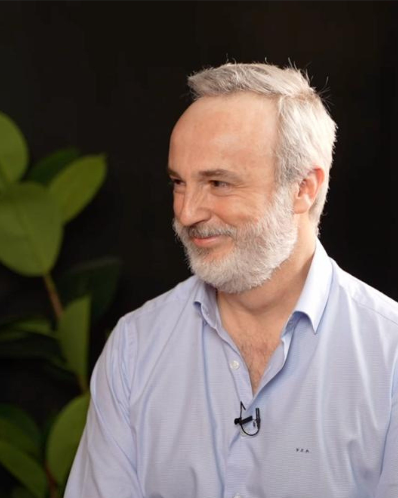
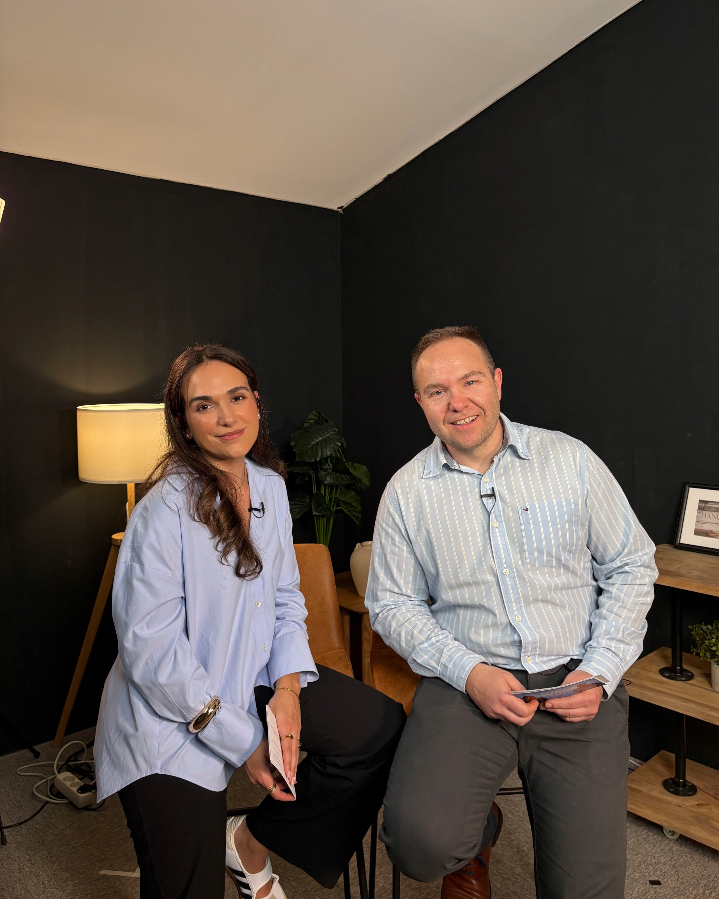
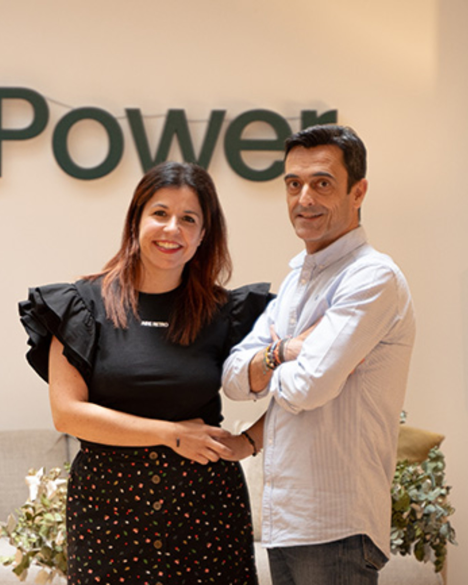

Las verdaderas historias detrás de la industria farmacéutica
La perspectiva real de quiénes trabajan en la industria. Sin guion, sin corsé, lejos del enfoque corporativo, y con un solo objetivo: conectar a los profesionales de hoy con los de mañana, con otros como ellos, y con todo el que tenga ganas de conocer este sector de verdad, desde dentro.

Ep. 06
Ep. 03
Ep. 01Nos cuentan lo que piensan, lo que viven, lo que ven: dos profesionales del sector farmacéutico sin miedo a preguntar en voz alta lo que otros siempre han querido contar.
Lleva años en ensayos clínicos - desde el entorno hospitalario hasta CROs y Sponsor a nivel global. Su perspectiva combina la mirada valiente de quien se incorpora joven en un sector complejo con el criterio sólido de quien ha estado en primera línea, participando activamente en cómo la investigación se traduce en opciones reales para los pacientes
in Ver perfil en LinkedIn17+ años en la industria farmacéutica, construyendo su carrera en la intersección entre departamento comercial y estrategia de negocio — desde la primera línea hasta roles globales en oncología. Lidera equipos multidisciplinares en entornos complejos, combinando visión estratégica con ejecución excelente. Siempre centrado en el desarrollo de talento y en sacar el máximo de cualquier buena idea, Jaime divide su tiempo entre el entorno corporativo, sus clases de Marketing & Strategy, y la co-fundación del podcast +Que Píldoras junto a Miren.
in Ver perfil en LinkedIn
Si escuchando +Que Píldoras te han entrado ganas de crecer en pharma, el siguiente paso es formarte. Nuestro patrocinador BePharma Institute ofrece Masters online 100% enfocados en la industria, con clases en directo y prácticas garantizadas en compañías farmacéuticas.
El área que protagoniza muchos de nuestros episodios. Fórmate para entrar como MSL, Medical Advisor o en Medical Affairs.
Más información → MBA · 12 meses · OnlineDa el salto a la dirección: estrategia, negocio y liderazgo en el sector salud, como cuentan nuestros invitados de alta dirección.
Más información → Máster · 12 meses · OnlineTu puerta de entrada al sector: de cero a profesional altamente demandado, con prácticas garantizadas en empresas top.
Más información → Máster · 9 meses · OnlineDomina la inteligencia artificial aplicada a pharma, una de las áreas con más recorrido y demanda del sector.
Más información →Profesionales que nos escuchan y referentes de la industria farmacéutica comparten por qué +Que Píldoras les aporta.
Llevo un tiempo escuchando +Que Píldoras y quería daros la enhorabuena por el contenido. Me está ayudando mucho a entender cómo funciona realmente la industria farmacéutica. Soy médico intensivista y estoy explorando dar el salto a Medical Affairs; escuchar que no existe un único camino para llegar a la industria me resultó muy útil.
¿Sabes que hay un nuevo podcast sobre la industria farmacéutica? Si quieres conocer las verdaderas historias detrás de la industria farmacéutica, no te pierdas +Que Píldoras.
Nuestra audiencia son profesionales del sector que toman decisiones en los principales laboratorios, alumnos de hoy que serán profesionales del mañana, y todo aquel que quiera saber qué hay detrás de la industria farmacéutica y los múltiples empleados que tiene.
Profesionales del sector en todas sus posiciones, desde especialistas hasta directivos, con experiencias y perspectivas diversas
Commercial Directors, Business Unit Heads, Country Managers y perfiles estratégicos que toman decisiones en el sector
Estudiantes de másteres especializados en farma que serán los líderes del mañana
Cualquier interesado en conocer el sector por dentro